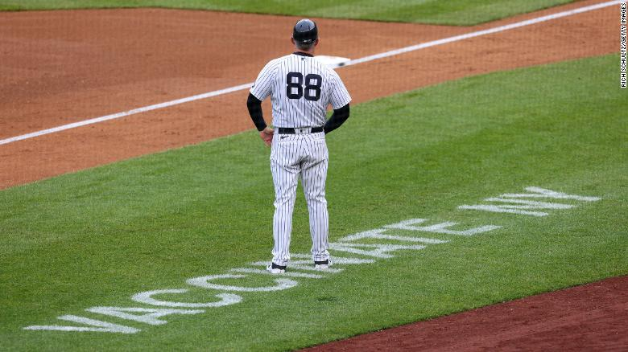
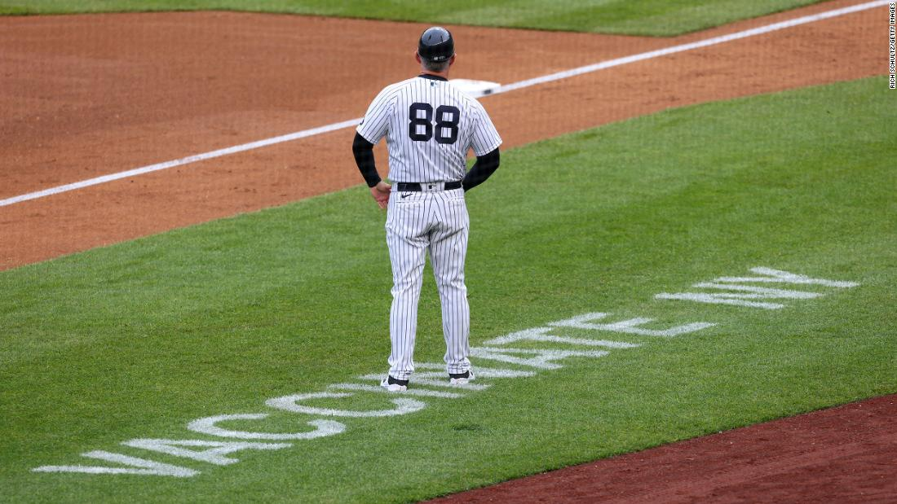
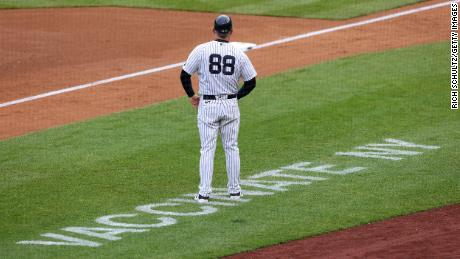

A 9th vaccinated New York Yankees member tested positive for Covid-19 but feels good, manager says

(CNN)Another vaccinated New York Yankees staff member has tested positive for Covid-19, the ninth to do so in the last week, manager Aaron Boone announced Sunday.
'We're just doing the best we can with it,' Boone said.'Fortunately, he's another one that feels good.So we'll just continue to try and be vigilant and handle it as best we can.'
The unidentified staff member, who has been fully vaccinated according to the team, will be isolating in Baltimore as the team plays the Baltimore Orioles.Another staffer was also identified as a close contact of the latest infected person.
In all, shortstop Gleyber Torres, pitching coach Matt Blake, third base coach Phil Nevin, first base coach Reggie Willits and five members of the team's traveling staff have tested positive for Covid-19 this week.All nine had been vaccinated using the Johnson Johnson shot, making these cases what the US Centers for Disease Control and Prevention refers to as 'breakthrough' infections.
Occasional breakthrough cases are not unexpected because no vaccine is perfect.The J one-shot vaccine was found in US clinical trials to be 72% effective against moderate Covid-19 and 85% effective against severe Covid-19.
Boone said the latest staffer 'feels good,' and seven of the other team members infected were asymptomatic.Nevin was the only one who showed symptoms, and he is now feeling better, vice president of communications Jason Zillo said previously.
Their mild or nonexistent symptoms showed the benefits of the vaccine, CDC Director Dr. Rochelle Walensky said on ABC's 'This Week' on Sunday.
'This is the vaccine working,' she said.'This means that you didn't get infected, or you didn't get a severe infection, you didn't require hospitalization, you didn't require death, and most likely those people were not transmitting to other people.So that is what we were working on the vaccine doing, we were hoping it would do.'
She also said that the Yankees' infections were detected during routine MLB testing that doesn't happen in the general public.She said the CDC is working with the Yankees to better understand the outbreak.
'We're working with, and we're engaging to try and understand the details of that investigation.I don't believe that is complete as of yet,' she said.
CNN's Naomi Thomas contributed to this report.
Posted On: 2021-05-16T00:00:00
Posted By: Wayne Sterling and Eric Levenson


Content Date: 2021-05-16
Download Date: 2021-05-30
Document ID: L0C04CPT0